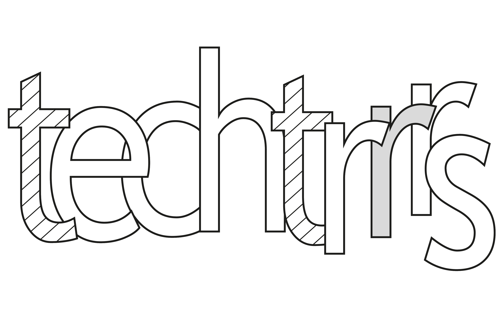
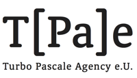
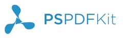
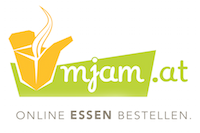
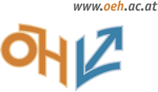
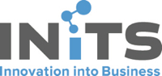
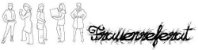
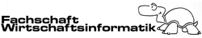

Hallo, Wien!
Rails Girls took place in Vienna on 14 and 15 November 2014!
During this free two-day workshop we dove into the magical world of programming with Ruby on Rails.
Follow @RailsGirls_VIE on Twitter or like our Facebook Page for updates!
You learn the basics of web development and coding with Ruby on Rails with the help of our coaches.
You need your own laptop, curiosity and a sprinkle of imagination!
Want to help? We are always looking for volunteers and coaches! Knowing Ruby and Rails is a plus, but not a must. Get in touch!
| 18.00 - 20.30 |
Installation partyGet to know the other participants a little bit better before the main event starts. Bring your laptop, so we can help get it ready for working with Rails.Get slides. |
|---|---|
| 21.00 - |
Coaches dinnerAll coaches are welcome to our coaches dinner where we'll go through the programme for the next day. |
| 9:00 - 10:00 |
Registration, coffee and installation festDuring the morning we’ll get the computers of those who couldn't make it to the installation party ready for working with Ruby on Rails. See slides from installation party. |
|---|---|
| 10:00 - 10:30 |
Welcoming wordsOutline of the day & word from our sponsors. |
| 10:30 - 11:00 |
Programming Intro & BentoboxLearn to "speak geek" and to understand web applications. |
| 11:00 - 12:00 |
Tryruby.orgLet's get coding! |
| 12:00 - 13:00 |
Workshop - Part IStart building your very first web application! |
| 13:00 - 14:00 | Lunch |
| 14:00 - 15:00 |
Lightning talks by our coaches
Laura Gaetano - On breaking rules (and things) beautifully |
| 15:00 - 18:00 |
Workshop - Part IIContinue working on your application. |
| 18:00 - |
AfterpartyOpen to everyone. Time to socialise with your fellow participants and the team! |
| To get an even better idea of what happens during the day, have a look at videos taken at the events in Berlin and Zürich! | |
Applications are now closed.
Acceptances informed: 7/8 November.
Venue:
Microsoft Austria, Am Euro Platz 3, 1120 Wien
Rails Girls Vienna is organised with the support of our wonderful partners.
Want to help? We are always looking for partners & sponsors for our non-profit event! E-mail us if you want to support Rails Girls Vienna!
 Metalab is an open (hack)space in Vienna's city centre where people do creative things with and without technology. Metalab helps organise Rails Girls Vienna.
Metalab is an open (hack)space in Vienna's city centre where people do creative things with and without technology. Metalab helps organise Rails Girls Vienna.
 Techtrrrs is an initiative connecting women* interested in tech – ranging from beginners wanting to acquire tech skills to students of tech subjects and tech professionals – in Vienna & Austria. Techtrrrs helps organise Rails Girls Vienna.
 Turbo Pascale Agency e.U. develops digital urban communication and information strategies, to create a new perception of the “feel” of given place. As architects in the world of Tech we are proud to support Rails Girls Vienna and give non-programmers an understanding of computer code.
Microsoft Austria is a subsidiary of Microsoft Corporation/Redmond USA. For developers Microsoft has numerous free offers such as training (microsoftvirtualacademy.com), events (codefest.at) and software (dreamspark.com, bizspark.com).
 PSPDFKit is the industry-leading iOS framework for displaying and annotating PDFs and filling out PDF forms. We're located in Vienna with a team all over the world. We use Rails both for internal and external applications and are proud to support Rails Girls and help bring more diversity into Tech.
 With Mjam.net you can quickly and easily order food online. Simply type in your adress, choose a restaurant, put together your desired menu and order. Whether it’s pizza, burgers, sushi, Thai or Indian - on mjam.at you can choose your favorite delivery service from over 750 restaurants. Enjoy your meal!
 Department of Feminist Politics is an organizational unit of the Austrian Students' Union which struggles for de facto gender equality within and outside institutions of higher education. Its work includes the dealing with and the permanent illustrating of current unacceptable developments in gender relations and formulating critical prospects of prevailing conditions.
 INiTS is the academic incubator of the University of Vienna and the Technical University. We boost startup success by offering consulting, know-how, a big network of alumni, partners and companies as well as funding.
Codeship is a free hosted Continuous Delivery Service. It focuses on simplicity and usability. Users can set up Continuous Integration in a matter of seconds and automatically deploy when all their tests have passed. Setup usually only takes 1 minute. Get started here: codeship.io
 Frauenreferat der HTU Wien: is a place where female students at the Technical University can connect and raise awareness for feminist issues related to science and engineering.
 FS WINF is the students' union for business informatics at the Vienna University of Technology. Our graduates from the bachelor and the master program belong to the most wanted and most valuable people on the job market.
 Platogo is a Facebook and mobile app development studio located near Rochusmarkt. We are a team of 10 passionate designers and developers with a strong product focus. We craft our apps with HTML5, Ruby on Rails and Node.js. We are always seeking for new talent!
Platogo is a Facebook and mobile app development studio located near Rochusmarkt. We are a team of 10 passionate designers and developers with a strong product focus. We craft our apps with HTML5, Ruby on Rails and Node.js. We are always seeking for new talent!
 RUNTASTIC, a leader in the mobile health & fitness sector, was founded in 2009 and has rapidly grown into an innovative suite of apps, products and services that track and manage health, fitness & daily activity data.
RUNTASTIC, a leader in the mobile health & fitness sector, was founded in 2009 and has rapidly grown into an innovative suite of apps, products and services that track and manage health, fitness & daily activity data.
How much does the workshop cost? Nothing, it's free - including a warm lunch, coffee and beverages throughout the day. You just need to be excited!
Who is this aimed at? Women* of all ages with basic knowledge of working with a computer. More skills are fine but not a prerequisite (if you already know how to program though, please consider becoming a coach; see below for more info). The official event language is English but group work can certainly be done in German if all group members and your coach speak German. You need to bring your own laptop to participate.
Can men participate? In theory yes, if they accompany women* who also attend the workshop. In practice it might not happen though as women* are given priority when picking applicants.
I know how to program - How can I help? We're always looking for people to coach our attendants! You don't necessarily need to know Ruby or Rails to be able to help. We'll have a workshop before the event to walk you through the curriculum. Get in touch!
Rails Girls Vienna 2014 has a Code of Conduct, which we expect all participants to have read and understood.